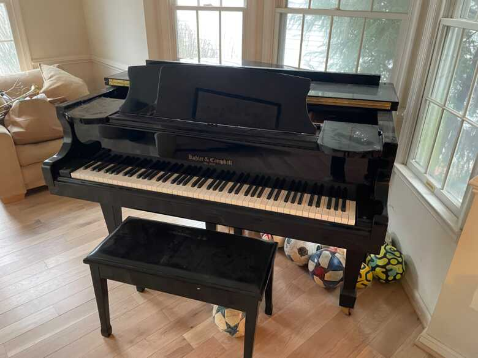
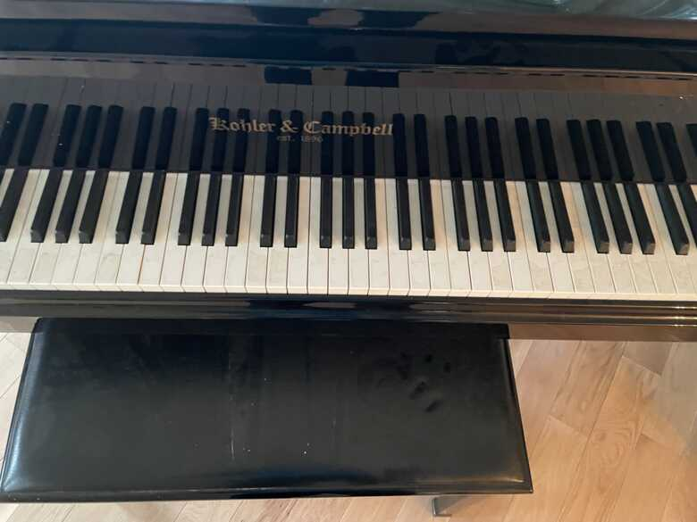
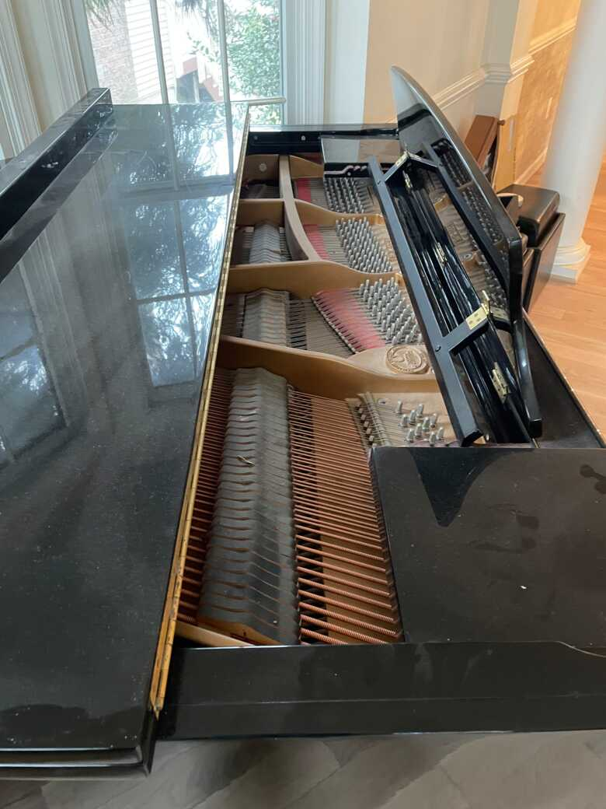
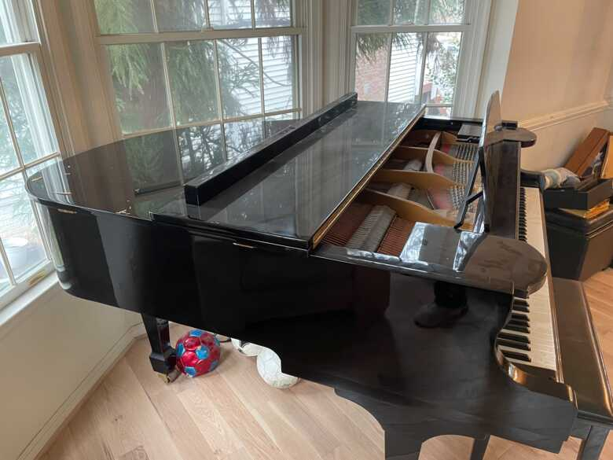

Piano Elegante de Cauda
Marca Europeia
Certificações:
Descrição Detalhada
Um magnífico piano de cauda europeu que exemplifica a perfeição técnica e sonora. Fabricado em 2005, este Baby Grand mantém toda a sua elegância e poder sonoro característico de pianos de cauda de alta qualidade. É um instrumento versátil, adequado tanto para concertos de câmara quanto para ambientes domésticos sofisticados.
Com seu tamanho elegante (195 cm), este piano oferece o melhor dos dois mundos: a qualidade e responsividade de um piano de cauda profissional com dimensões práticas para a maioria dos espaços. O som é quente, profundo e possui excelente projeção.
Conservado em estado impecável, este instrumento foi objeto de manutenção regular e profissional. A ação é responsiva e precisa, os pedais funcionam perfeitamente, e a qualidade tonal é consistente em toda a extensão do teclado.
Galeria de Fotos
Vista Superior

Caixa de Ressonância
Mecanismo Interno

Teclado

Cordas Internas

Lado Direito
Lado Esquerdo
Vídeos Demonstrativos
Funcionamento dos Pedais
Qualidade Sonora
Performance Técnica
Especificações Técnicas
Estado de Conservação
Estrutura e Acabamento
Muito bem conservado. Acabamento brilhante perfeito, sem danos significativos.
Mecanismo e Ação
Funcionamento perfeito em toda a extensão. Resposta rápida e precisa.
Cordas e Ressonância
Sem corrosão, som quente e envolvente com excelente projeção.
Geral
Instrumento de alta qualidade, pronto para concertos e apresentações.
Interessado neste Piano?
Entre em contato conosco para mais informações ou agendar uma visita.